A kapcsolódó elmélet: tankönyv, 32.5 alfejezet.
1. példa – Kiolvadt vezérlőbiztosíték. A motor nem indul; a mágneskapcsoló egyáltalán nem húz be. A kapcsolási rajz szerint sorban mérünk: M1 ponton 228 V, M2 ponton 0 V. Mivel az M2 pont már az F2 biztosíték után van, a hiba az F2-re vagy a hozzá tartozó foglalatra mutat. Kikapcsolás és öt biztonsági szabály után az F2-t kivesszük; a foglalatban égésnyomot látunk, a biztosíték betétje kiolvadt. A mögöttes ág mérésénél a K1 tekercs ellenállása a névleges érték körül van, tehát nincs rövidzár. A kiváltó ok valószínűleg a lazult csatlakozás okozta túlmelegedés volt. Javítás: a foglalat cseréje, a kötés utánhúzása, új biztosíték behelyezése.
2. példa – Szakadt indítógomb. A motor nem indul, de a vezérlő feszültség az M2 ponton rendben van (230 V). Az M3 és az M4 ponton is 230 V mérhető, tehát az F1 95–96 és az S0 STOP érintkező zárva van. A START nyomógomb benyomásakor az M5 (A1) ponton 0 V marad. A K1 13/14 önfenntartó érintkező ilyenkor még nem játszik szerepet, mert a K1 nincs behúzva, tehát nyitott; a tekercset most csak az S1 tudná feszültség alá helyezni. Az S1 érintkezője tehát nem zár (szakadt, elkopott vagy oxidált érintkező, laza kötés). A mérés szerint az S1 bemenete (M4) feszültségen van, kimenete (M5) benyomva sem kap feszültséget, ez pontosan az indítógomb hibájára utal. Javítás: az S1 nyomógomb cseréje.
Cél. Tanműhelyi, direkt indítású motorvezérlésen (oktató felügyelete mellett) hibakeresési gyakorlat elvégzése: a szándékosan beépített hibát mérésekkel be kell határolni és meg kell nevezni. Otthon törpefeszültségen előbb gyakorold: Otthoni tanulólabor és szerszámkészlet biztonságosan (tankönyv, 1.3), „III. Hibakeresés párban”.
Eszközök és anyagok. Multiméter (feszültség- és ellenállásmérés), szigetelt kéziszerszámok, kapcsolási rajz, a vizsgált vezérlés (pl. direkt indítás önfenntartással, S0, S1, K1, F1, F2).
Biztonsági korlát. A feladat tanműhelyi (törpefeszültségű) környezetre vagy jogosult oktató felügyeletére vonatkozik; hálózati feszültségen önállóan ne végezd.
Az öt biztonsági szabály: 1. Lekapcsolás. 2. Visszakapcsolás elleni biztosítás (kizárás, lakat, tábla). 3. Feszültségmentesség ellenőrzése két, egymástól független műszerrel vagy műszeres ellenőrzéssel. 4. Földelés és rövidre zárás, ha indokolt. 5. A szomszédos, feszültség alatt álló részek lefedése.
Lépések:
A feszültségmentes mérések (1. és 3–6. lépés) kézfogásait az alábbi ábra mutatja: 1 lekapcsolás, lakat és tábla, majd a feszültségmentesség ellenőrzése kétpólusú feszültségvizsgálóval minden vezető között és a PE-hez; 2 a K1 tekercs A1–A2 ellenállása (nem 0 Ω és nem OL – a várható érték gyártói adat); 3 az F1 95–96 bontója visszaállított állapotban közel 0 Ω; 4 az S0 (NC) és az S1 (NO) érintkező nyugalomban és benyomva.
Ha a nyomógombokat a kezelődobozból jövő kábellel kötöttük be, a méréshez nem kell a dobozt megbontani: a vezérlő sorkapcsain (X2) mérve a kábel és a gomb együtt ellenőrizhető. A HTML-kiadásban a négy lépés egyenként lejátszható.
Ellenőrzés. A gyakorlat akkor sikeres, ha a tanuló meg tudja nevezni a hibát, meg tudja mutatni a mérési pontokat, és a mért értékekkel meg tudja indokolni a hibás elem kiválasztását.
Tünet. A motor nem indul, és a K1 mágneskapcsoló sem húz be. A kezelő a START gombot nyomva tartja, de semmi nem történik; a K1 nem zúg, a kapcsolás néma.
Hipotézisek. A lehetséges okok: F2 vezérlőbiztosíték ki, S0 bontó érintkezője szakadt, S1 záró érintkezője hibás, K1 13–14 önfenntartó érintkezője szakadt, K1 tekercs szakadt, F1 hőkioldó 95–96 érintkezője nyitott, vagy a kötéseknél szakadás van.
Mérések. Először feszültségméréssel szűkítünk. A mérőzsinór fekete csatlakozója az N sorkapcsra kerül. A piros mérőzsinórral sorban mérünk:
Ezután a tekercs A2 pontján is mérünk: M6 (K1 A2) 0 V. A rajz szerint az A2 kapocs közvetlenül az N-re csatlakozik, ezért ép N-kötésnél az A2 0 V-on van; szakadt tekercsnél az A2 az N-en marad (0 V), és a teljes 228 V a szakadt tekercsen esik. Következtetés: a tekercsen 228 V esik, mégsem húz be, tehát tekercsszakadás gyanúja áll fenn (vagy a mágneskapcsoló mechanikusan beragadt). Ha viszont M5 és M6 is 228 V lenne, a tekercs ép, és a szakadás utána, az A2–N vezetékben vagy az N sorkapocsnál van. A következtetést kikapcsolás után az ellenállásmérés erősíti meg.
Kikapcsolt mérés. A berendezést lekapcsoljuk, elvégezzük az öt biztonsági szabályt. A K1 tekercs A1–A2 ellenállását mérjük; a multiméter „OL” (végtelen) értéket mutat. Ok. A K1 tekercs szakadt. Javítás. A tekercset vagy a mágneskapcsolót cseréljük. Visszaellenőrzés. Új tekercs beépítése után visszakapcsolva a K1 behúz, a motor elindul. Megelőzés. A tekercs túlfeszültség-csúcsai ellen célszerű a gyártó által ajánlott RC-védőtagot vagy varisztort alkalmazni, ha a kapcsolásban ez hiányzik.
1. feladat (A). Sorold fel a tünet–ok–mérés módszer legalább négy lépését.
2. feladat (A). A direkt indítású vezérlésen (lásd a diagramot) a motor nem indul. A mérések: M1=230 V, M2=230 V, M3=230 V, M4=0 V. Melyik elem hibásodhat meg? Indokold. Mire következtetnél, ha már az M3-on 0 V lenne?
3. feladat (B). A következő mérési sorozatot vetted fel: M1=0 V, M2=0 V, M3=0 V, M4=0 V. Mi a hiba? Mi a legvalószínűbb ok?
4. feladat (B). Kikapcsolt állapotban méred a K1 tekercs ellenállását: 0,7 Ω-ot kapsz. A tekercs névleges feszültsége 230 V, a gyártó szerint a névleges áramfelvétel 0,3 A. Helyes-e az ellenállásmérés? Mi lehet a baj, és hogyan ellenőriznéd?
5. feladat (C). A motor nem indul, és a K1 nem húz be. A feszültségmérés: M1=230 V, M2=230 V, M3=230 V, M4=230 V, M5 (A1)=230 V, M6 (A2)=0 V a START gomb benyomásakor. Kikapcsolás után a K1 tekercs ellenállása végtelen. Melyik elem hibás, és mi bizonyítja a feszültségmérésből, majd az ellenállásmérésből? Ismertesd a javítás lépéseit.
6. feladat (D). Gyakorlati hibakeresési feladat: egy tanműhelyi direkt indítású vezérlésen a motor nem indul, de a K1 behúz. Milyen két irányt vizsgálnál (erősáramú és vezérlési), és milyen mérésekkel? Mondd el a vizsgálati lépéseket.
Mind a 12 rajz egy szándékos hibát tartalmaz (a védelmek, a PE és a jelzések egy része a rajzról az egyszerűség kedvéért hiányzik, ez nem hiba). Mindegyikhez válaszolj: Mi történik a kapcsolás működtetésekor? Hol a hiba? Rajzold át helyesen. A rajzok csak papíron elemzendők, a hibás kapcsolást nem építjük meg.
H1 (A). Direktindítás.
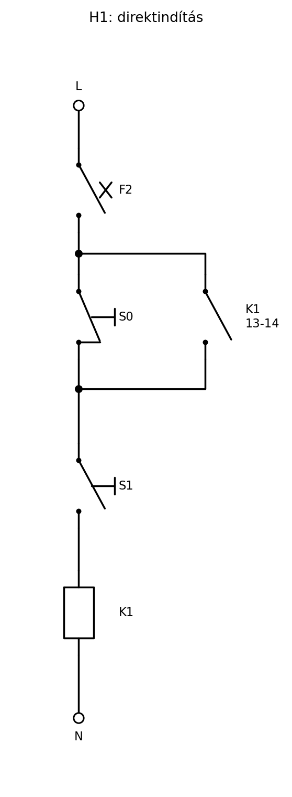
H2 (A). Direktindítás.
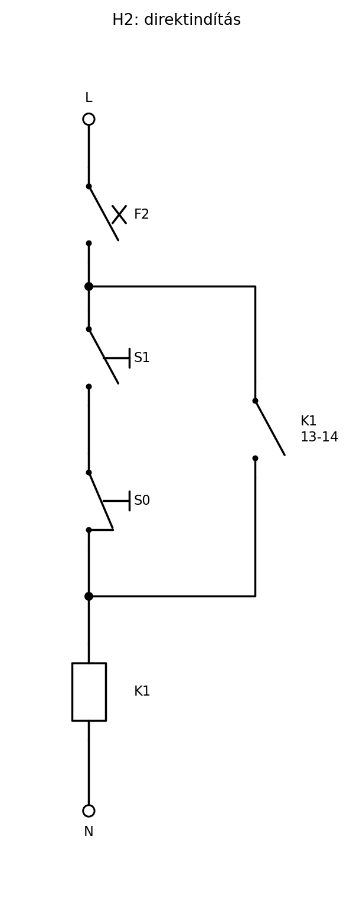
H3 (A). Direktindítás hőkioldóval.
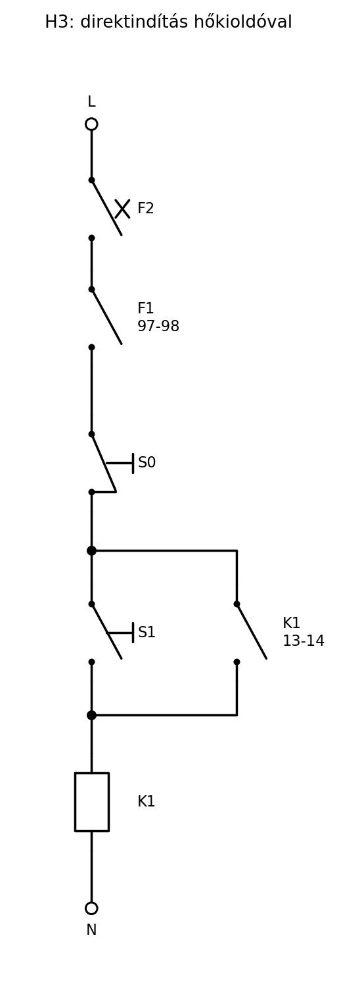
H4 (B). Indítás és leállítás két helyről (S0.1, S1.1 az 1. helyen, S0.2, S1.2 a 2. helyen).
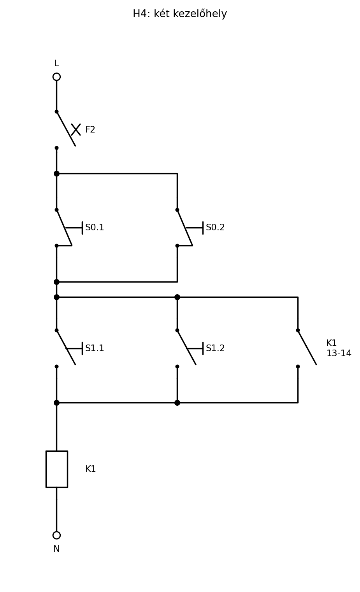
H5 (B). Reverzáló vezérlés (K1 előre, K2 hátra).
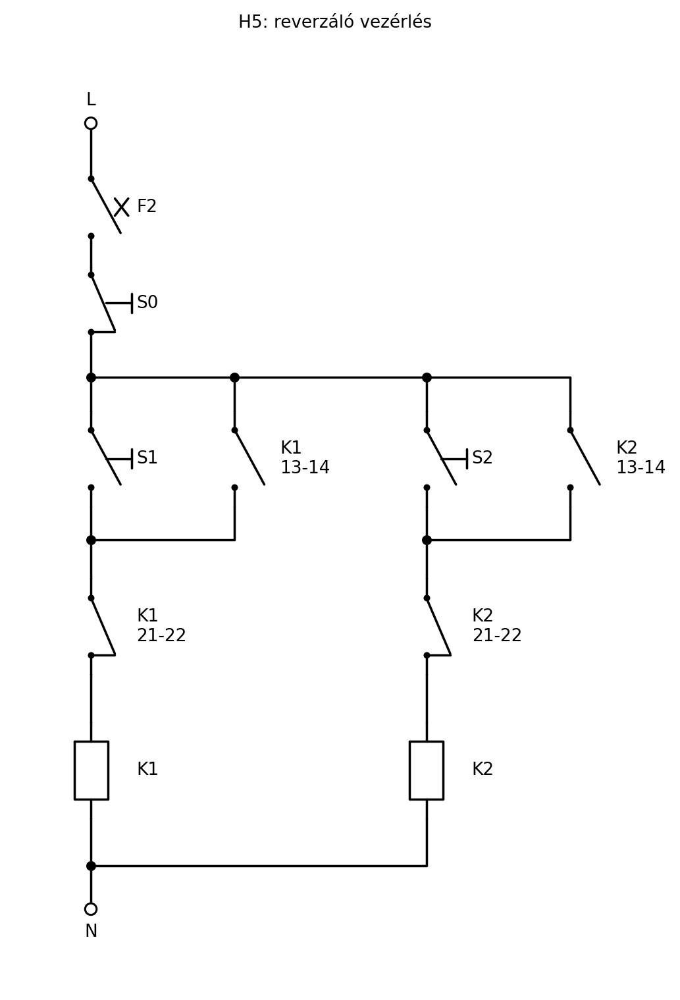
H6 (B). Reverzáló főkör: a K2-nek a forgásirányt kellene megfordítania.
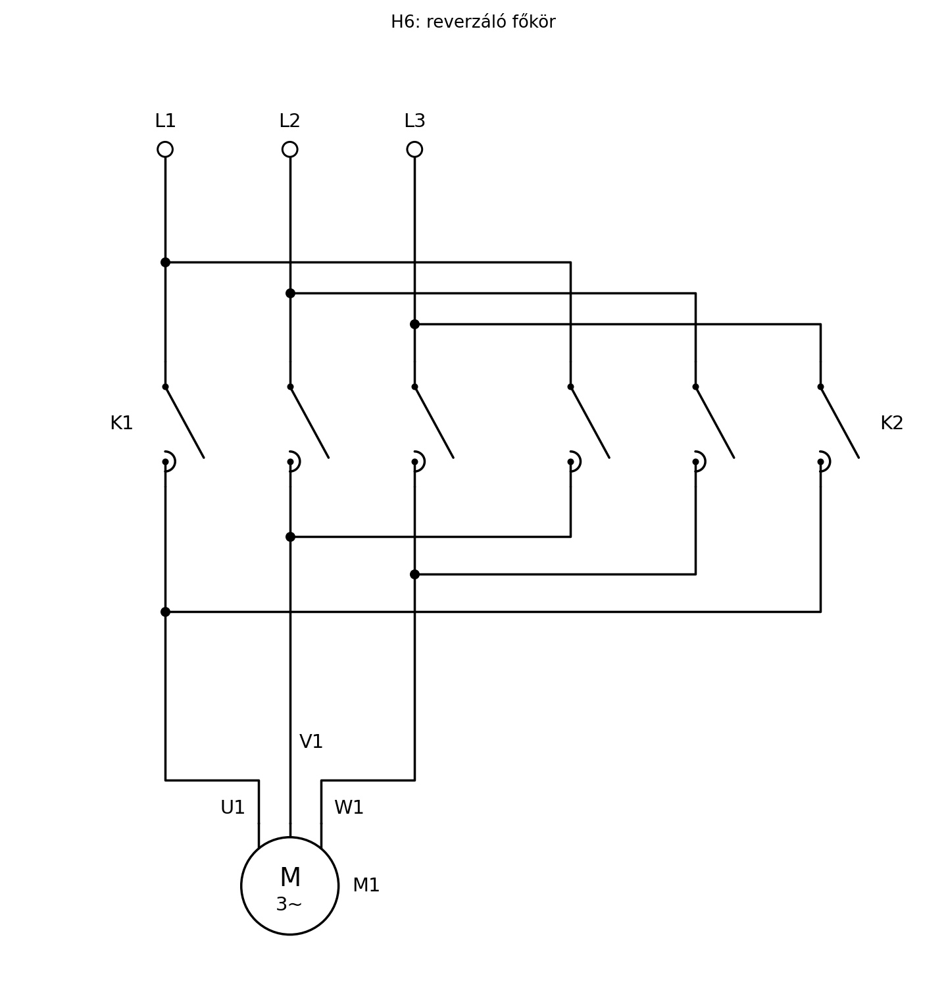
H7 (B). Reverzáló vezérlés kettős (nyomógombos és kontaktoros) reteszeléssel; a közvetlen irányváltás elvárás.
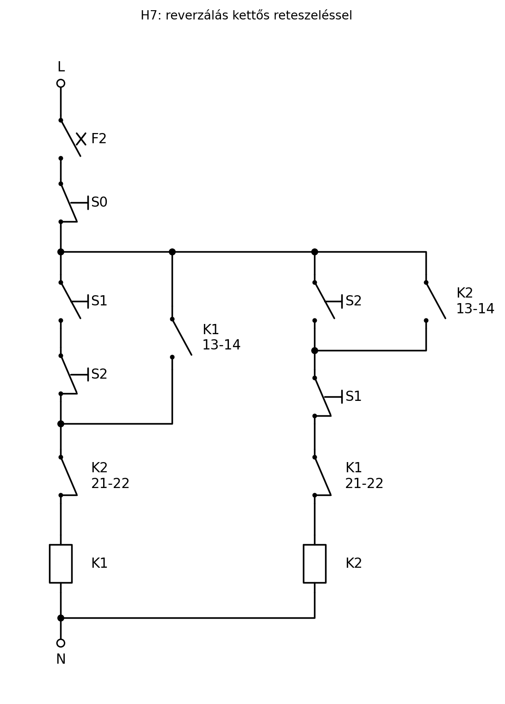
H8 (C). Y-Δ vezérlés (K2 csillag, K3 delta, KT1 meghúzás-késleltetett).
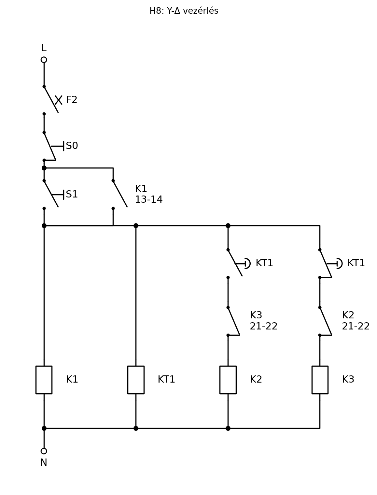
H9 (C). Y-Δ főkör deltaállásban (K1 és K3 meghúzva, a csillagkontaktor nincs rajzolva).
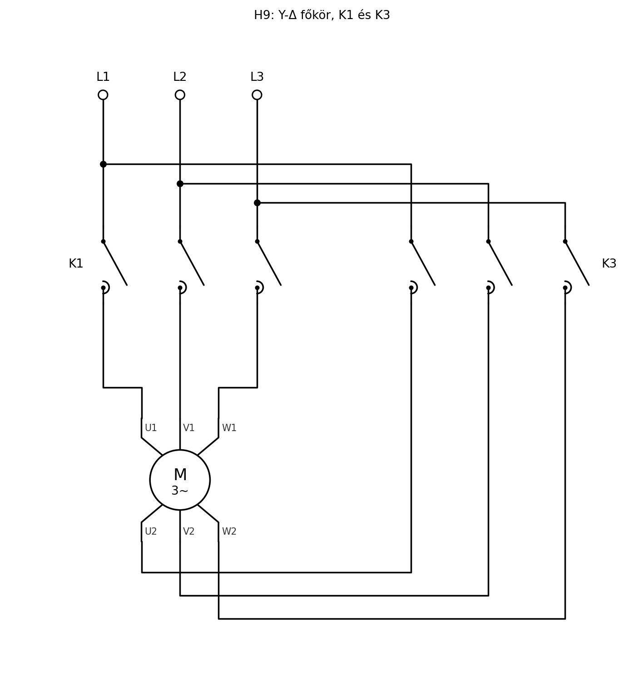
H10 (C). Sorrendi indítás: az etető (K1) csak futó fogadó (K2) mellett indulhat.
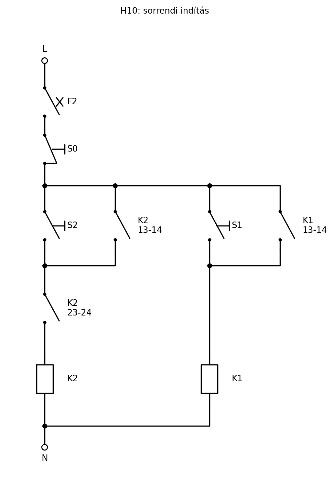
H11 (C). Dahlander-vezérlés részlete: K1 a lassú fokozat, K3 a gyors fokozat csillagpontja.
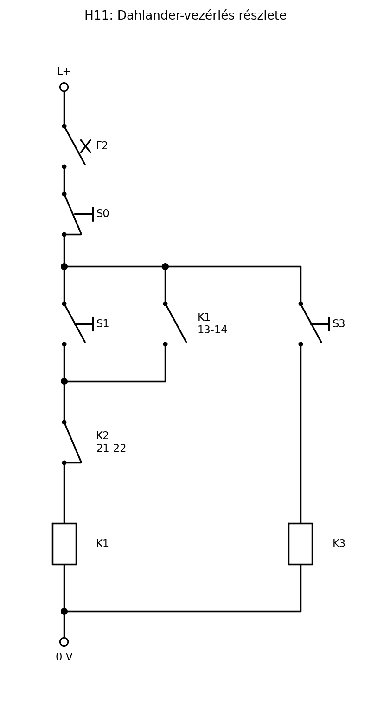
H12 (D). PLC-s direktindítás: S9 vészleállító, K10 csatolórelé a PLC kimenetén.
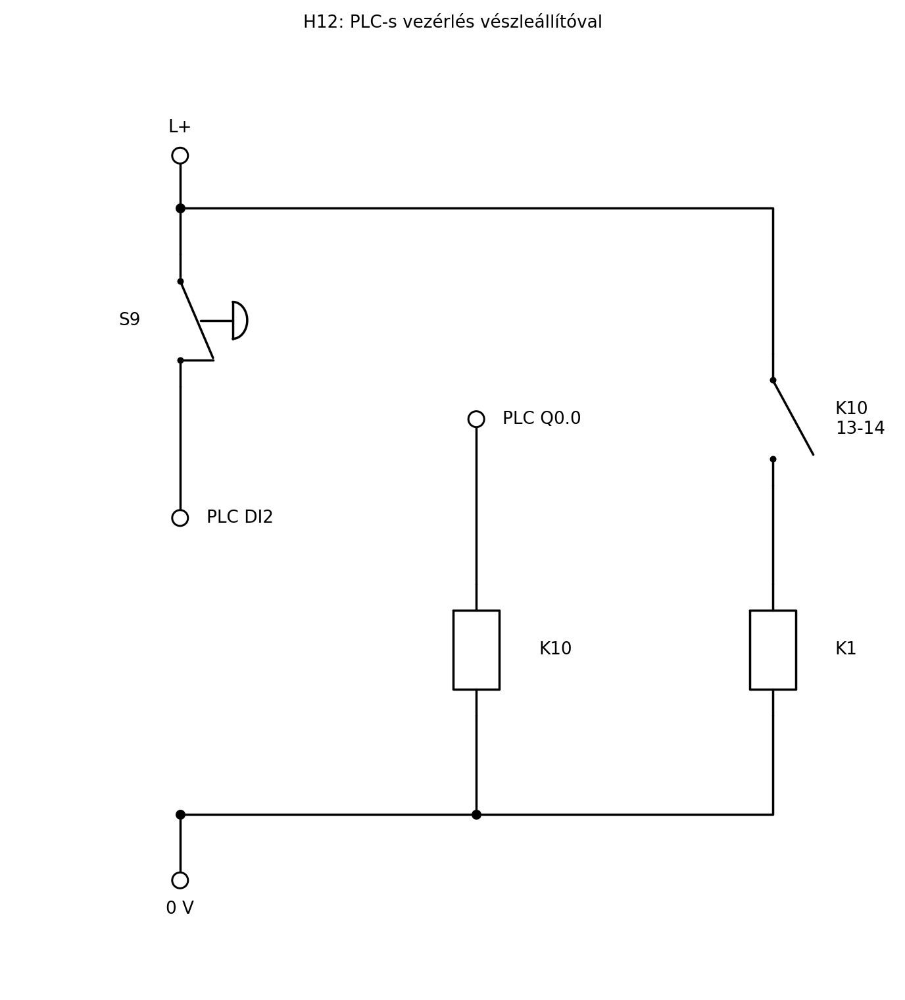
Az értékek szemléltető példaadatok. A feszültség alatti mérést hálózati (230 V-os) vezérlésen csak jogosult személy, tanulóként csak felügyelet mellett, tanműhelyi panelen végezheti; a feszültségmentes méréseket az öt biztonsági lépés előzi meg. A 230 V-os köröknél a feszültség az N-hez, a 24 V-osoknál a 0 V-hoz képest értendő.
M1 (B). Reverzálás (32.2 (tankönyv, 32.2)): ELŐRE nem indul, HÁTRA rendben.
| Mérőpont | S1 nyomva | S1 elengedve |
|---|---|---|
| S1 kimenet = K2 21 | 230 V | 0 V |
| K2 22 = K1 A1 | 0 V | 0 V |
| K2 állapota | elengedve | elengedve |
Kérdés: melyik elem hibás?
M2 (B). Reverzálás: S2-re a K2 zümmög, de nem húz be.
| Mérőpont | S2 nyomva |
|---|---|
| K2 A1–A2 | 230 V |
| K1 A1–A2 | 0 V |
| K1 állapota | elengedve |
Kérdés: villamos vagy mechanikai a hiba?
M3 (C). Y-Δ (32.3 (tankönyv, 32.3)): a KT lejárta után a motor nem vált deltába.
| Mérőpont | KT lejárt |
|---|---|
| KT A1 | 230 V |
| KT 18 = K2 21 | 230 V |
| K2 22 = K3 A1 | 0 V |
| K2 állapota | elengedve |
Kérdés: hol szakad a K3 ága?
M4 (C). Y-Δ: START után a K1 behúz, a K2 (csillag) nem, a KT még nem járt le.
| Mérőpont | START után |
|---|---|
| KT 15 | 230 V |
| KT 16 | 0 V |
| K3 állapota | elengedve |
Kérdés: mi a hiba?
M5 (B). Sorrendi indítás (32.4 (tankönyv, 32.4)): a fogadó (K2) jár, az etető (K1) S1-re nem indul.
| Mérőpont | S1 nyomva |
|---|---|
| K2 23 | 230 V |
| K2 24 | 0 V |
| K2 állapota | behúzva |
Kérdés: mit ellenőrzöl a kontaktoron?
M6 (C). 24 V DC: a K1 behúzásakor a tápegység elektronikus védelme lekapcsol. Feszültségmentesen, a tekercsről levett diódamodullal és külön a tekercsen mérve:
| Mérés | Eredmény |
|---|---|
| modul, piros az A1, fekete az A2 oldali lábon (diódateszt) | 0,6 V |
| modul fordított polaritással | OL |
| tekercs A1–A2 (modul nélkül) | 150 Ω |
Kérdés: mi a hiba?
M7 (C). 24 V AC, 50 m-es kezelőhely: a K1 zümmög, nem húz be.
| Mérőpont | behúzási kísérletkor |
|---|---|
| T1 szekunder | 24 V |
| K1 A1–A2 | 17 V |
Kérdés: mi az ok, és mit javasolsz?
M8 (D). 24 V AC: START után a K1 kattog (behúz, elejt, újra behúz).
| Mérőpont | kattogás közben |
|---|---|
| T1 szekunder | 24 V |
| K1 A1 – T1 0 V | 23 V |
| K1 A2 – T1 0 V | 7 V |
| K1 A1–A2 | 16 V |
Kérdés: melyik vezetékszakasz hibás?
M9 (B). Direktindítás (teljes lap (tankönyv, 32.1)): STOP után a motor tovább jár.
| Mérőpont | S0 nyomva |
|---|---|
| K1 A1–A2 | 0 V |
| motor U1–V1 | 400 V |
Kérdés: mi a hiba, és mi az első teendő?
M10 (B). Földelt vezérlőkör: bekapcsoláskor azonnal kiold az F2. Feszültségmentesen, bontott 0 V–PE kötéssel:
| Mérés | Eredmény |
|---|---|
| 1-es vezeték – PE | 0 Ω |
| 1-es vezeték – PE, X2:1-ről a W2.1 eret levéve | OL |
Kérdés: hol a hiba?
M11 (C). Hosszú kezelőkábel: nyitott S1 mellett (K1 áll) a K1 A1-en „feszültség” van.
| Mérés (K1 A1 – N) | Érték |
|---|---|
| multiméter, kb. 10 MΩ | 90 V |
| ugyanott LoZ állásban | 0 V |
Kérdés: hiba-e?
M12 (D). Dahlander, 24 V DC: GYORS gombra a K2 behúz, a K3 nem.
| Mérőpont | GYORS után |
|---|---|
| K3 A1 – 0 V | 24 V |
| K3 A2 – 0 V | 24 V |
| K3 A1–A2 | 0 V |
Kérdés: mi a hiba?
Önellenőrzés – válaszok
1. feladat (A). A módszer lépései: tünet pontos megfigyelése; lehetséges okok felsorolása; mérési terv készítése; mérés és kiértékelés; javítás és utóellenőrzés. (Bármely négy elfogadható.)
2. feladat (A). M4 az S0 STOP után van, és a mérés 0 V. Ez azt jelenti, hogy az S0 bemenete (M3) még feszültségen van, de kimenete (M4) nincs, tehát az S0 bontó érintkezője szakadt (vagy beragadt benyomott állapotban), vagy a hozzá tartozó csatlakozás hibás. Ha már az M3-on 0 V lenne (M2 = 230 V mellett), akkor az F1 95–96 érintkezője nyitott: a hőkioldó kioldott (ellenőrizd a kioldásjelzőt, és keresd a túlterhelés okát), vagy a 95–96 érintkező, illetve a bekötése hibás.
3. feladat (B). Már M1-en sincs feszültség, ami arra utal, hogy a vezérlő tápfeszültség hiányzik, vagy a mérőműszer nincs jól csatlakoztatva. Legvalószínűbb ok: a vezérlőtáp megszakadt, a főkapcsoló le van kapcsolva, vagy a vezérlő transzformátor nem ad feszültséget. Ellenőrizni kell a vezérlőtápforrás oldalát és a mérési referenciapontot.
4. feladat (B). A mért 0,7 Ω ellenállás nagyon alacsony a 230 V-os, 0,3 A-es tekercshez, mert a a tekercs impedanciája (tartási állapotban); az egyenáramú ellenállás ennél jóval kisebb, jellemzően néhány tíz–néhány száz Ω (ellenőrizendő: gyártói adat). A 0,7 Ω még ehhez képest is két nagyságrenddel kevés: menetzárlat vagy párhuzamos ág mérése valószínű. A mérés hibás lehet, mert a tekercset feszültség alatt vagy párhuzamos ágban mérted, vagy a tekercs rövidzárlatos. Ellenőrizd, hogy a mérés kikapcsolt állapotban, a tekercs kivezetéseiről, a párhuzamos elemek kizárásával történt.
5. feladat (C). A hiba a K1 tekercs szakadása. A feszültségmérés is erre utal: M1…M4 = 230 V, tehát az F2, az F1 95–96 és az S0 rendben van; A1 (M5) = 230 V, A2 (M6) = 0 V, tehát a teljes feszültség a tekercsen esik, mégsem húz be; az ellenállásmérés (végtelen) igazolja. A javítás: feszültségmentesítés, az öt biztonsági szabály, a tekercs ellenállásának mérése (végtelen), a tekercs vagy a mágneskapcsoló cseréje, majd visszakapcsolás és működési próba.
6. feladat (D). Mivel a K1 behúz, a vezérlőáramkör jó. Először az erősáramú főáramkört vizsgáljuk: a K1 főérintkezők zárnak-e, a motor kábelezése ép-e, a motor kapcsain van-e feszültség. Feszültség alatt megmérjük a K1 főérintkezők be- és kimenete közötti feszültségesést (ideális esetben közel 0 V). Kikapcsolt állapotban mért érintkező-ellenállás és motor tekercsellenállás is segít. Ha a főáramkör a K1-ig rendben van, a hőkioldó főáramköri hőelemeinek folytonosságát (szakadt hőelem) és a motort vizsgáljuk; leoldott hőkioldó nem lehet az ok, mert akkor a K1 nem húzna be (az F1 95–96 bontó nyitva lenne). A méréseket feszültség alatt csak jogosult személy, a vizsgálatokat feszültségmentesítés után (öt lépés) végezzük.
| Rajz | Hiba és következmény | Javítás |
|---|---|---|
| H1 | a K1 13–14 a STOP-pal párhuzamos: nincs önfenntartás, és nyomva tartott START mellett a STOP sem állít le | a 13–14 az S1-gyel párhuzamos, az S0 előtte, a közös ágban |
| H2 | a 13–14 az S1 és S0 soros kapcsolását hidalja át: indítás után a STOP hatástalan | az S0 a párhuzamos ág elé, sorosan |
| H3 | a tekercskörben a 97–98 záró van: a motor nem indítható, csak kioldott hőkioldónál kapna feszültséget a kör | F1 95–96 bontó a tekercskörbe, a 97–98 a zavarjelzéshez |
| H4 | a két STOP párhuzamos: csak mindkettő egyidejű megnyomására áll le | az S0.1 és S0.2 sorosan |
| H5 | a reteszelő bontó a saját tekercs előtt van: nincs kölcsönös retesz (zárlatveszély), és a behúzó kontaktor magát bontja, kattog | a K1 ágába a K2 21–22, a K2 ágába a K1 21–22 |
| H6 | a K2 mindhárom fázist ciklikusan tolja el: a fázissorrend nem változik, a motor ugyanarra forog | két fázis cseréje: K2: L1→W1, L2→V1, L3→U1 |
| H7 | az S2 bontója csak az S1-gyel soros, az önfenntartás megkerüli: futó ELŐRE mellett az S2 nem ejti a K1-et, a K2 a K1 21–22 miatt nem húz be (zárlat nincs, de a közvetlen váltás nem működik) | az S2 bontója a párhuzamos ág után, a K2 21–22 elé |
| H8 | a KT1 érintkezői felcserélve: a motor deltában indul, majd csillagba vált (teljes indítóáram, utána terhelve csillagban melegszik) | K2 ágba késleltetett bontó, K3 ágba késleltetett záró |
| H9 | a K3 azonos jelű végekre köt: minden tekercs két vége ugyanazon a fázison, a tekercsfeszültség nulla, deltában a motor nem kap táplálást (zárlat nincs) | L1 (U1)–W2, L2 (V1)–U2, L3 (W1)–V2 |
| H10 | a reteszelő K2 23–24 a fogadó saját ágába került: a K2 nem tud behúzni, az etető viszont fogadó nélkül indítható | a K2 23–24 a K1 ágába, sorosan |
| H11 | a K1 ágából hiányzik a K3 bontója, és a K3 külön gombról húzható: lassú fokozatban a K3 a hálózati fázisokat zárná rövidre | a K3 a K2 ágával együtt húzzon, a K1 ágába K3 21–22 (és K2 21–22) |
| H12 | a vészleállító csak a PLC bemenetén van: programhiba vagy beragadt kimenet esetén nem állít le | az S9 bontója a K1 tekercskörébe is sorosan (vagy biztonsági relé), a DI2 csak felügyel |